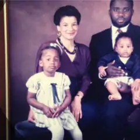
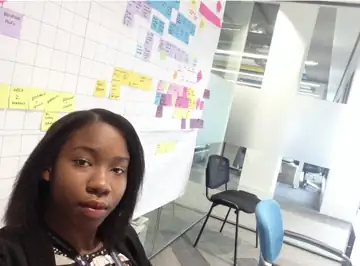

Published and developing long-form research outputs and repository records.
LIVING BIOGRAPHICAL RECORD
Biographical Record
A source-led summary of my public record, organised so that major biographical claims connect to the relevant portfolio, archive or source trail. The record can expand as further work, sources and milestones accumulate.
OVERVIEW
Grace
Grace is a British interdisciplinary researcher, technologist and educator, and creative practitioner whose public record spans technology, audiovisual systems, education, AI ethics and governance, music, public-service environments, research and creative practice.
The record is organised as a connected biography rather than a single-career profile. It distinguishes current work from historical material, formal research from public discussion, and documented claims from matters that remain under research.
BIOGRAPHICAL INDEX
Early life and education

Grace was born in Farnborough, Kent. Her first-person biographical record attributes much of her career direction and moral development to her parents and to early service involving children and the church. Those formative experiences are recorded here as part of her personal history.

She was introduced to music as a child and regularly spent time gardening with her mother. Her first-person record also describes childhood exposure to workplace and family functions connected with her father's companies and to Japanese families within that social environment, alongside an early familiarity with Japanese animation. Personal-history source note.
Her childhood creative development included membership of Bromley Youth Music Trust and a certificate for her art presented by the mayor. Classical saxophone training introduced a lasting emphasis on listening, disciplined practice, ensemble work and creative expression.
Langley Park School for Girls
Grace completed her GCSEs at Langley Park School for Girls. School, music and visual art formed the earliest foundations of a learning record that would later connect creative practice with technical and public-service work.
Croydon College — Music Technology
College study in Music Technology developed her interest in the relationship between performance, sound production and technical systems. Her education record includes a National Diploma in Music Technology.
Middlesex University — Jazz
She studied on the BA Jazz programme, exploring musical structure, performance, improvisation and the historical and stylistic foundations of jazz.
Jazz curriculum and practice
- Studies included jazz styles, performance practice, musical structure and improvisation.
University of West London — Music Technology and Audio Engineering
At the University of West London’s London College of Music, her studies connected studio practice, the physics of sound, acoustics, automation, audio and video, live events, soundscapes, aesthetics and web development.
Childcare and Social Care — Pearson Edexcel award
Her vocational learning includes the Pearson Edexcel Level 3 Diploma for the Children and Young People’s Workforce (Social Care) (QCF), supporting her interests in care, learning and work with children.
Childcare and social-care subject areas
- Children and Young People’s Workforce (Social Care).
- Supporting children’s physical activity and movement skills.
- Promoting positive behaviour.
Bromley College of Further and Higher Education — Legal Studies
Legal study through the CILEx and City & Guilds route developed foundational knowledge of UK law, procedure and client care.
University of Roehampton / QAHE — Business
Study in Entrepreneurship and Business Management broadened her learning into commercial activity and organisational practice, including Marketing and Communications in a Digital World.
Birkbeck, University of London — AI, Ethics & Society
Grace undertook postgraduate study in AI, Ethics & Society, connecting her technical and institutional experience with ethics, governance and socio-technical research. Her university attendance, assessed work and knowledge acquired remain part of her education, alongside questions about recognition and accreditation of prior learning.
She reports barriers including restricted learning-platform access, disputed assessment conditions and progression decisions. She considers these barriers potentially discriminatory and reports that the concerns are under investigation. and following the programme Grace later shared the Chronological Ethical Self-Inventory.
While considering a PhD programme, she began documenting the experience as part of a developing contribution to educational leadership: examining access, institutional accountability, fair assessment and how existing learning is recognised. She also shares updates on increasing the representation of Black professors in UK higher education, connecting participation with progression and visibility in academic leadership.
Alongside her studies, she contributed informal peer mentoring, conceptual support, curriculum engagement and knowledge exchange within the AI, Ethics & Society cohort. She was invited to contribute a segment of a class session and developed and shared the Chronological Ethical Self-Inventory. Her wider research engagement includes liaison with the Social Research Association.
Further narrative and supporting documentation are being developed for her forthcoming book, Breaking Barriers.
Continuing development and future study
Continuing learning connects programming, audiovisual systems, machine-learning operations, governance and independent research. PhD study remains a considered pathway. Grace has already undertaken seven years of research with BCS as a member and is weighing up supervision carefully following the barriers she experienced. Grace considered applying to the University of London Officers’ Training Corps. This was pending; she has not joined.
Explore the wider education and recognition-of-prior-learning record.
Education barriers, recognition and life progression
Grace describes her life story as shaped by repeated interruptions to the progression she had worked towards. In her account, missing adjustments, capped assessments and lost or disputed work affected the route from study into professional establishment and wider life plans. She regards repeated failures in higher education as deeply insulting: institutions entrusted with assessing her learning have, she argues, placed barriers in the way of its fair recognition, with consequences for opportunity, income, confidence and the time available to build a life.
She has continued pursuing achievements, developing her practice and documenting her experience because those ambitions remain important to her. Her concern is that qualifications influence who is taken seriously, which doors open and how a person’s contribution is recognised; institutional barriers can therefore reach beyond the classroom into professional and personal life. This experience informs her developing work in educational leadership, fair access and Black academic representation, with a fuller account being prepared for Breaking Barriers.
Early career
Grace's early career developed through project-based work across technology, healthcare and professional-services environments. She gained corporate experience at Reuters through Brook Street, supporting a SharePoint data-migration project and user-guide creation; she subsequently worked across NHS administrative and IT settings, including Lewisham and primary-care environments.
She subsequently moved further into enterprise systems and audiovisual support, including work at JP Morgan in Canary Wharf. Her professional record shows the recurring combination of technical systems, user support, administration, communication and service delivery within complex organisations.
Healthcare systems and patient administration
Her NHS work connected information systems with the practical needs of staff and patients. During her early healthcare career, she was mentored in clinical governance by a Ghanaian doctor. Supplied certificates document training in PIMS Appointments and PIMS Outpatients, supporting the patient-information and service-coordination strand of her early career.
Early technical and healthcare certificates20 types
This catalogue connects early workplace training with later technical development. It highlights learning that transfers across technology, healthcare, education and organisational work.
Programming, digital systems and technical quality
- Python programming — Learn Python 3. Codecademy. Transferable value: scripting, automation and data handling.
- Back-end application development — Create a Back-End App with JavaScript Skill Path. Codecademy. Transferable value: application logic, APIs and digital-service development.
- Web design — Professional CIW Designer training. Firebrand Certificate of Accomplishment. Transferable value: usable web interfaces, website structure and digital communication.
- Full-stack engineering — Full-Stack Engineer career path. Codecademy profile certificate entry. Transferable value: connecting front-end interfaces with back-end services.
- Machine-learning operations — MLOps Tools: MLflow and Hugging Face. LinkedIn Learning. Transferable value: model workflows, experiment tracking and reproducibility.
- Recommender systems — Learn Recommender Systems. Codecademy profile certificate entry. Transferable value: recommendation methods and understanding personalised digital systems.
- Application state management — Learn Redux: Fundamentals. Codecademy. Transferable value: organising state and behaviour in interactive applications.
- Systems programming introduction — First Look: Rust. LinkedIn Learning. Transferable value: familiarity with a systems-programming language and its approach to memory safety.
- AV control systems — Crestron Core Certificate, CTI-CCT. Crestron Technical Institute. Transferable value: integrated audiovisual systems, control and technical support.
- Architecture engineering and quality — Architecture Engineering with Emphasis on Quality. BCS Quality SG Certificate of Attendance. Transferable value: systems architecture, quality considerations and technical evaluation.
Healthcare information systems and communication
- Medical terminology — Medical Terminology 4415-01. City & Guilds / Mediterm Training, 2011. Transferable value: accurate clinical vocabulary, record interpretation and communication.
- Patient appointment administration — PIMS Appointments. Lewisham HealthCare NHS Trust; training completed. Transferable value: appointment coordination and accurate patient-information handling.
- Outpatient administration — PIMS Outpatients. Lewisham Hospital NHS Trust; training completed. Transferable value: outpatient workflows, service coordination and records administration.
Safeguarding, inclusion and workplace safety
- Equality and diversity — Equality & Diversity, NHS Induction. Lewisham Hospital NHS Trust, 2002. Transferable value: inclusive service delivery and respectful professional practice.
- Workplace health and safety — Health & Safety Awareness. Skills for Health / NHS Professionals, 2003. Transferable value: recognising hazards and supporting safer workplaces.
- Child safeguarding — Safeguarding Children, Level 1. Skills for Health, 2022. Transferable value: recognising concerns and understanding reporting responsibilities in healthcare, education and care.
- Adult safeguarding — Safeguarding Adults, Level 1. Skills for Health, 2022. Transferable value: recognising vulnerability, concerns and appropriate escalation.
- Prevent awareness — Prevent Training. Skills for Health, 2022. Transferable value: safeguarding awareness and appropriate referral routes.
- Fire safety — Fire Safety. Skills for Health, 2022. Transferable value: fire prevention, emergency awareness and workplace procedures.
- Resuscitation awareness — Resuscitation, Level 1. Skills for Health, 2022. Transferable value: awareness of emergency response and escalation in healthcare settings.
The entries record certificates, course records and attendance evidence already supplied. Dates identify historical training; refresher-dependent healthcare training is recorded as part of the learning history.
These experiences built a foundation in accurate records, usable guidance, technical troubleshooting and communication across professional teams. They also linked her earlier creative and vocational learning with organisational systems and public service.
Professional career

Tottenham Hotspur. Grace contributed audiovisual and systems support during the Northumberland Development Project, working within a large-scale stadium-development environment.
UBS. At 5 Broadgate, her work included AV systems, remote monitoring, UAT, user support, technical documentation, service metrics and operational improvement.
Across financial services, healthcare, education, sport and public-service settings, her work has combined technical systems, business support, communication and user-facing service delivery. Later activity broadened that base into teaching, mentoring, research, governance and technology-focused professional development.
Financial services — conduct and operational responsibility
Alongside AV operations at UBS, she completed internal market-conduct assessments. The certificates add a documented conduct-training strand to her experience of regulated professional environments.
Financial-services training certificates
- UBS Business University — Market Conduct: CC, WM, R&C — 82%.
- UBS — Market Conduct Asset Management and Corporate Center — 90%.
Technical development — systems, programming and quality
Her continuing professional development extends from audiovisual control systems and web design into programming and machine-learning operations. The supplied records document both completed courses and participation in specialist quality-focused learning.
Selected technical certificates and course records
- BCS Quality SG — Certificate of Attendance: Architecture Engineering with Emphasis on Quality.
- Crestron Technical Institute — Crestron Core Certificate, CTI-CCT.
- Codecademy — Learn Python 3.
- Codecademy — Create a Back-End App with JavaScript Skill Path.
- Codecademy — Learn Redux: Fundamentals.
- Codecademy profile — Full-Stack Engineer career-path and Learn Recommender Systems certificate entries.
- LinkedIn Learning — First Look: Rust.
- LinkedIn Learning — MLOps Tools: MLflow and Hugging Face.
Education, care and organisational work
Later experience includes operational work at L’Oréal HQ, supply teaching and facilitation through Teaching Personnel, alongside mentoring and community contribution. Healthcare, financial services, education and enterprise technology each added a different perspective on responsibility, access and how organisations support people.
St Joseph’s College
Grace taught and facilitated learning through Teaching Personnel at St Joseph’s College, Beulah Hill, a boys’ secondary college in Upper Norwood.
Care and safeguarding training
- Skills for Health / NHS Professionals — Safeguarding Children Level 1, completed as historical training; current validity is not asserted.
Sustained practice and research direction
A recurring theme is the time required to develop expertise. Her childhood music training, university study and professional development connect deliberate practice with judgement, responsibility and continued learning. Her interests in academia, law and governance, healthcare systems and specialist engineering provide context for this direction; the professional roles and qualifications she has actually held are recorded separately in her CV.
She is now bringing these strands into AI ethics, governance, institutional research and educational leadership, including documentation of her own higher-education experience and updates on Black academic representation.
Business and venture development
Business activity has included operational work, entrepreneurship, startup development and the practical side of turning ideas into viable projects. Current interests are centred less on presenting a fixed corporate identity and more on research-led development, collaboration and building structures that can support future work.
Venture concepts are kept separate from established organisations or completed commercial activity so that exploratory ideas are not presented as more mature than they are.
Research and publications
Research interests include artificial intelligence, ethics, governance, technology, institutions, public administration, regulation, provenance and the interaction between formal systems and lived outcomes. Case studies, reference infrastructure and longer written outputs are maintained separately.
Her family-history work applies the same provenance discipline: family testimony, public records, court judgments, property archives and likely connections under further research are organised by evidential status, with precise archival targets recorded where physical records are required.
Repository and identity services such as ORCID, Google Scholar and Zenodo provide external points of reference. Stable public records are preferred where they can directly support a publication, date or research claim.
Bounded research problems grouped by area, evidence status and method.
Creative practice
Creative practice includes saxophone, music, sound, audiovisual production, visual research and developing art practice. Music, AV/media practice and visual work are maintained as linked strands.
Media-rich pages can hold large visual or video modules, titles and concise context while preserving the restrained editorial aesthetic of the wider site.
Performance, instruments, composition development and external listening profiles.
Studio, live-event, sound-desk and audiovisual production practice.
Structured professional and creative visual portfolio.
Media and public-facing work
Media-facing activity spans audiovisual production, live and recorded discussion, public speaking, digital platforms and visual presentation. These are treated as separate formats rather than collapsed into one category: production work, public conversation and personal presentation each serve different purposes.
The public-facing pages are therefore a curated route into selected material rather than a social-media feed or claim to a conventional media career.
Teaching, mentoring and community contribution
Teaching, facilitation, mentoring and community contribution recur across the record. They include classroom work, knowledge-sharing, practical guidance, church and community service, and contribution to learning environments outside conventional employment titles.
Public life and civic contribution
Grace has also written directly to MPs and other public office-holders on matters including higher education, public services, transport and access, social policy, institutional fairness and questions affecting everyday civic life. The correspondence is generally practical in tone: identifying a problem, setting out the relevant context and asking what action, clarification or policy route is available.
Some of that correspondence has received replies, acknowledgements or onward referrals indicating that the issue was being considered, clarified or raised with the relevant department or authority. Such responses are treated as evidence of engagement rather than as endorsement of every argument made.
Prepared speaking, spontaneous live discussion, teaching, advocacy and civic or public-interest activity are kept distinct so that each form carries the correct evidential weight. A short debate clip is treated differently from a formal paper, and a representation to an institution is distinguished from an institutional decision.
Over time this section can record talks, panels, debates, teaching, advocacy, acknowledgements and other dated public contributions. Recognition is kept separately where contribution would not otherwise be obvious from job titles alone.
Achievements and recognition
This section brings together formal recognition, recommendations, acknowledgements, documented contribution, advocacy outcomes and work whose value is not fully visible from job titles alone.
Childhood recognition includes a certificate for her art presented by the mayor, alongside membership of Bromley Youth Music Trust. Her university studies and professional training are summarised in the education and career sections above.
The emphasis is evidential: recognition received, contribution made and outcomes achieved should be separated from aspirations or self-description.
Public presentation and identity
The public identity presented through the site is intentionally multidimensional rather than built around one job title. Research, technology, music, education, faith, heritage and public contribution are shown as distinct strands within the same record.
Presentation is curated, but the aim is not to manufacture a persona. Historical material, developing work and current activity are labelled differently so that visitors can distinguish chronology, evidence and context.
Other endeavours
Professional-community contribution has included BCS South London Branch committee activity, event planning, outreach and introductions. Church service has included music, teaching and contribution across ministry departments.
Other areas of continuing interest include sport and coaching-related development, horticulture, language learning, independent study, visual research and multidisciplinary project work.
Personal life
Home and family environment. Grace is unmarried and does not define herself primarily through marriage or family roles, although she currently lives within a family environment.
Work with children. Earlier professional work included roles involving other people's children in education, facilitation and care-related settings, which she found meaningful without making parenthood central to her own identity.
Relationships. In earlier adulthood, while seeking establishment and responding to a sense of calling on her life, Grace was rarely open to casual advances despite attracting considerable interest. In 2013, while she was working at JP Morgan, she met someone locally. During the pandemic she chose to step away when the future direction remained uncertain; personal differences and diverging long-term aspirations also shaped the decision.
Friendship and church. Her understanding of friendship has been shaped by Christian ideas of fellowship, loyalty, mutual encouragement and accountability rather than by social activity alone. At periods of particularly intensive church involvement, however, the demands on her time sometimes made ordinary time with friends and family more difficult, prompting later reflection on how church community, friendship and family life should relate to one another.
Faith and heritage
Faith record
- Rhema Church London — baptismal certificate, recording baptism at Old Lodge Lane Baptist Church.
Grace is a Christian and has studied Christian theology. Faith, theology, prayer, music and service form a continuing strand of her biographical record and help explain the ethical and public-interest dimensions of her work.
Her paternal family is Ga-Dangme from Accra. The documented immediate line runs through her father to her grandfather Christopher Akai Nettey and great-grandfather Herbert Mills Nettey, while the wider Swalaba / Sonmenaa / Gbese family environment is strongly supported by public records.
The earlier connection into the historical Asafoatse Nettey lineage is likely on the present combined family and documentary evidence, and the exact parent-to-child route is being researched further through family papers, court records, property archives and traditional-family sources.
On her maternal English side, her grandmother was legally adopted into the Symondson family, alongside an English biological ancestry that is recorded separately. The wider published Symondson/Simmonds family history includes documented musical, military and collateral genealogical records.
Sociological context
Grace’s life can also be understood through the relationship between cultural, social and economic capital. Early experiences of music, gardening and church were followed by university learning and work across healthcare, finance, technology, education and public service. Her Ghanaian and English family histories, Black British identity and Christian formation provide further context for examining belonging, opportunity and institutional experience. These perspectives help illuminate a developing life course without assigning a fixed class position or assuming that race, gender or any single characteristic explains an individual outcome.
Selected works and records
See also
Notes
- The biographical record is maintained independently of Wikipedia and follows an encyclopaedic structure for readability.
- Family-history references distinguish biological descent, legal adoption and collateral family relationships where those routes differ.
- Personal recollection is used for private experience; public records and repository records are used where a claim has an external documentary source.
References
- ORCID — Grace research identity record
- Google Scholar — author profile
- Zenodo — London Smart Piezoelectric Flooring Pilot Dossier
- Zenodo — CESI v1.0
- Kim Simmonds Family Genealogy — published Symondson / Simmonds pedigree material
- GaDangme discussion archive — contextual Accra family-history material
Further reading
External links
SOURCE NOTE
Biographical provenance
Personal and early-life details are drawn from Grace's first-person biographical and family archive; professional claims link to the digital CV and professional record; research, creative, public and heritage claims link to their dedicated evidence pages.
Biographical conclusion: the page is designed as a connected, source-led record in which significant factual claims lead directly to the relevant archive, portfolio or research trail.